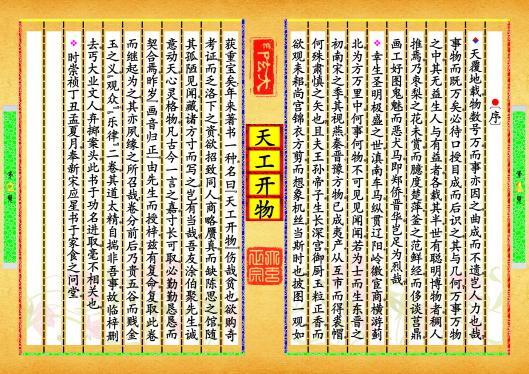
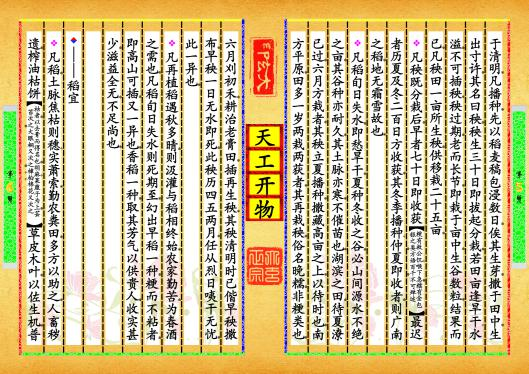
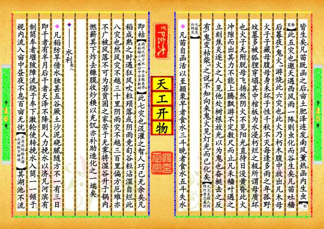

-
第【1-2】页 ▎⚫〔序〕▼天覆地载，物数号万，而事亦因之，曲成而不遗，岂人力也哉？事物而既万矣，必待口授目成而后识之，其与几何？万事万物之中，其无益生人与有益者，各载其半；世有聪明博物者，稠人推焉。乃枣梨之花未赏，而臆度楚萍；釜之范鲜经，而侈谈莒鼎。画工好图鬼魅而恶犬马，即郑侨、晋华，岂足为烈哉？❖幸生圣明极盛之世，滇南车马，纵贯辽阳；岭徼宦商，横游蓟北。为方万里中，何事何物，不可见见闻闻。若为士而生东晋之初，南宋之季，其视燕、秦、晋、豫方物，已成夷产；从互市而得裘帽，何殊肃慎之矢也？且夫王孙帝子，生长深宫，御厨玉粒正香，而欲观耒耜；尚宫锦衣方剪，而想象机丝。当斯时也，披图一观，如获重宝矣！年来著书一种，名曰《天工开物》。伤哉贫也！欲购奇考证，而乏洛下之资；欲招致同人，商略赝真，而缺陈思之馆。随其孤陋见闻，藏诸方寸而写之，岂有当哉？吾友涂伯聚先生，诚意动天，心灵格物，凡古今一言之嘉，寸长可取，必勤勤恳恳而契合焉。昨岁《画音归正》，由先生而授梓；兹有复命，复取此卷而继起为之，其亦夙缘之所召哉！卷分前后，乃贵五谷而贱金玉之义，“观众”、“乐律”二卷，其道太精，自揣非吾事，故临梓删去。丐大业文人，弃掷案头，此书于功名进取，毫不相关也。❖时崇祯丁丑孟夏月，奉新宋应星书于家食之问堂。预览书籍 全文配置
-
第【3-4】页▎⚫〔第一▂乃粒〕▼宋子曰，上古神农氏若存若亡，然味其徽号两言，至今存矣。生人不能久生而五谷生之，五谷不能自生而生人生之。土脉历时代而异，种性随水土而分。不然神农去陶唐食已千年矣，耒耜之利，以教天下，岂有隐焉。而纷纷嘉种，必待后稷详明，其故何也？❖纨裤之子，以赭衣视笠蓑；经生之家，以农夫为诟詈。晨炊晚饷，知其味而忘其源者众矣！夫先农而系之以神，岂人力之所为哉！▼——总名❖凡谷无定名。百谷，指成数言。五谷则麻、菽、麦、稷、黍，独遗稻者，以著书圣贤起自西北也。今天下育民人者，稻居十七，而来、牟、黍、稷居十三。麻、菽二者，功用已全，入蔬饵、膏馔之中，而犹系之谷者，从其朔也。▼——稻❖凡稻种最多。不粘者，禾曰秔，米曰粳。粘者，禾曰徐，米曰糯[南方无粘黍，酒皆糯米所为]。质本粳而晚收带粘[俗名婺源光之类]，不可为酒，只可为粥者，又一种性也。凡稻谷形有长芒、短芒[江南名长芒者曰浏阳早，短芒者曰吉安早]、长粒、尖粒、圆顶、扁面不一。其中米色有雪白、牙黄、大赤、半紫、杂黑不一。❖湿种之期，最早者春分以前，名为社种[遇天寒有冻死不生者]，最迟者后预览书籍 全文配置
-
第【5-6】页 于清明。凡播种，先以稻麦稿包浸数日，俟其生芽，撒于田中，生出寸许，其名曰秧。秧生三十日即拔起分栽。若田亩逢旱干、水溢，不可插秧。秧过期，老而长节，即栽于亩中，生谷数粒，结果而已。凡秧田一亩所生秧，供移栽二十五亩。❖凡秧既分栽后，早者七十日即收获[粳有救公饥、喉下急，糯有金包银之类，方语百千，不可殚述]，最迟者历夏及冬二百日方收获。其冬季播种、仲夏即收者，则广南之稻，地无霜雪故也。❖凡稻旬日失水，即愁旱干。夏种冬收之谷，必山间源水不绝之亩，其谷种亦耐久，其土脉亦寒，不催苗也。湖滨之田，待夏潦已过，六月方栽者，其秧立夏播种，撒藏高亩之上，以待时也。南方平原，田多一岁两栽两获者。其再栽秧，俗名晚糯，非粳类也。六月刈初禾，耕治老膏田，插再生秧。其秧清明时已偕早秧撒布。早秧一日无水即死，此秧历四五两月，任从烈日咦干无忧，此一异也。❖凡再植稻遇秋多晴，则汲灌与稻相终始。农家勤苦，为春酒之需也。凡稻旬日失水则死期至，幻出早稻一种，粳而不粘者，即高山可插，又一异也。香稻一种，取其芳气以供贵人，收实甚少，滋益全无，不足尚也。▼——稻宜❖凡稻，土脉焦枯则穗、实萧索。勤农粪田，多方以助之。人畜秽遗，榨油枯饼[枯者，以去膏而得名也。胡麻、莱菔子为上，芸苔次之，大眼桐又次之，樟、桕、棉花又次之]，草皮木叶，以佐生机，普预览书籍 全文配置
-
第【7-8】页天之所同也[南方磨绿豆粉者，取溲浆灌田肥甚。豆贱之时，撒黄豆于田，一粒烂土方寸，得谷之息倍焉]。土性带冷浆者，宜骨灰蘸秧根[凡禽兽骨]，石灰淹苗足，向阳暖土不宜也。土脉坚紧者，宜耕垄，叠块压薪而烧之，填坟松土不宜也。▼——稻工图，四，❖凡稻田刈获不再种者，土宜本秋耕垦，使宿稿化烂，敌粪力一倍。或秋旱无水及怠农春耕，则收获损薄也。凡粪田若撒枯浇泽，恐霖雨至，过水来，肥质随漂而去。谨视天时，在老农心计也。凡一耕之后，勤者再耕、三耕，然后施耙，则土质匀碎，而其中膏脉释化也。❖凡牛力穷者，两人以扛悬耜，项背相望而起土。两人竟日仅敌一牛之力。若耕后牛穷，制成磨耙，两人肩手磨轧，则一日敌三牛之力也。凡牛，中国惟水、黄两种。水牛力倍于黄。但畜水牛者，冬与土室御寒，夏与池塘浴水，畜养心计亦倍于黄牛也。凡牛春前力耕汗出，切忌雨点，将雨则疾驱入室。候过谷雨，则任从风雨不惧也。❖吴郡力田者，以锄代耜，不藉牛力。愚见贫农之家，会计牛值与水草之资、窃盗死病之变，不若人力亦便。假如有牛者，供办十亩，无牛用锄，而勤者半之。既已无牛，则秋获之后，田中无复刍牧之患，而菽麦麻蔬诸种，纷纷可种，以再获偿半荒之亩，似亦相当也。❖凡稻分秧之后数日，旧叶萎黄而更生新叶。青叶既长，则耔预览书籍 全文配置
-
第【15-16】页 皆生矣。凡苗既函之后，亩土肥泽连发，南风薰热，函内生虫[形似蚕茧]，此五灾也。邀天遇西风雨一阵，则虫化而谷生矣。凡苗吐穑后，暮夜“鬼火”游烧，此六灾也。此火乃朽木腹中放出。凡木母火子，子藏母腹，母身未坏，子性千秋不灭。每逢多雨之年，孤野坟墓多被狐狸穿塌。其中棺板为水浸，朽烂之极，所谓母质坏也。火子无附，脱母飞扬。然阴火不见阳光，直待日没黄昏，此火冲隙而出，其力不能上腾，飘游不定，数尺而止。凡禾、穑叶遇之立刻焦炎。逐火之人见他处树根放光，以为鬼也，奋梃击之，反有“鬼变枯柴”之说。不知向来鬼火见灯光而已化矣[凡火未经人间传灯者，总属阴火，故见灯即灭]。❖凡苗自函活以至颖栗，早者食水三斗，晚者食水五斗，失水即枯[将刈之时少水一升，谷数虽存，米粒缩小，入碾、臼中亦多断碎]，此七灾也。汲灌之智，人巧已无余矣。凡稻成熟之时，遇狂风吹粒殒落，或阴雨竞旬，谷粒沾湿自烂，此八灾也。然风灾不越三十里，阴雨灾不越三百里，偏方厄难亦不广被。风落不可为。若贫困之家，苦于无霁，将湿谷升于锅内，燃薪其下，炸去糠膜，收炒糗以充饥，亦补助造化之一端矣。▼——水利图，八，❖凡稻防旱借水，独甚五谷。厥土沙、泥、硗、腻，随方不一。有三日即干者，有半月后干者。天泽不降，则人力挽水以济。凡河滨有制筒车者，堰陂障流，绕于车下，激轮使转，挽水入筒，一一倾于枧内，流入亩中。昼夜不息，百亩无忧[不用水时，栓木碍止，使轮不转动]。其湖池不流预览书籍 全文配置